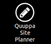
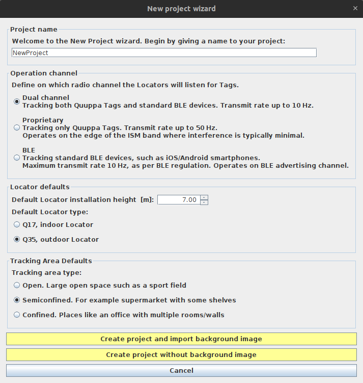
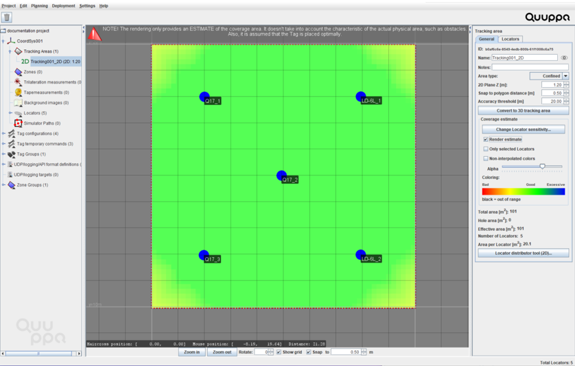

プロジェクトのプランニング
Development Kit システムの設定が完了したら、 Quuppa Site Planner (QSP) を使って、プロジェクトのプランニングを始めます。このステップでは、スペースにプロジェクトを展開し、ハードウェアの設置準備方法を決定します。
-
Quuppa Controller のデスクトップで、Quuppa Site Planner アイコンをダブルクリックして、QSP アプリケーションを起動します。

-
QSP で、New project wizard を使用して、新しいプロジェクトを作成します。新しいプロジェクトに次の情報を入力します。
Important: 小数点には必ずピリオド (.) を使用してください。また、 Quuppa システムからデータをエクスポートするときに CSV (Comma Separated Values) 形式を使用するため、Quuppa プロジェクトのオブジェクトにカンマ (,) が含まれる名前をつけないでください。

- プロジェクトにわかりやすい名前を付けます。
- Operation Mode で Proprietary mode を選択します。
- Locator Type のデフォルトとして Q17, indoor Locator を選択します。
- 展開環境に応じた、適切な追跡エリアのタイプを選択します。
- 2D 追跡エリアを選択します。
- background image (背景イメージ) を使用するかどうかを選択します。
- Create project and import background image ボタンを選択すると、プロジェクトにインポートするファイルの選択を求められます。選択後、プロジェクトファイルが作成されます。
- Create project without background image ボタンを選択すると、背景イメージを使わずに、新しいプロジェクトファイルが作成されます。
Note: これがプロジェクトのデフォルト設定になります。あとで必要に応じて編集できますので、この時点ではそれほど心配する必要はありません。 -
背景イメージを使用する場合は、イメージをスケーリングします。
Note: New Project Wizard をすでに閉じた後であっても、上部のメニューから Planning > Add Background image を選択して、背景イメージを追加することができます。
- 実際のスペースの寸法 (壁から壁までの距離など) を測定し、スケーリングに使用する参照ポイントをマップ上に明記します。できるだけ正確に、センチメートル単位で測定してください。正確であればあるほど、追跡結果の精度が向上します。
- QSP のマップ上で、スケーリング測定の始点をクリックして選択し、次に終点をクリックして選択します。たとえば、一方の壁、他方の壁の順にクリックします。
- 実際に測定した距離をメートル単位でウィザードに入力します。Note: 何らかの理由で Scaling Wizard が見当たらない場合、または背景イメージを再度スケーリングしたい場合には、そのイメージを選択して、右側のパネルにある Scale background image ボタンをクリックし、Scaling Wizard を起動します。
背景イメージを使用しない場合は、使用するスペースの実際の寸法を測定します。これは、次のステップにおいて、追跡エリアのポリゴンを適切に変更するために必要な手順です。
-
背景イメージの望ましいエリアにあわせて、追跡エリアのポリゴンを修正します。
- 左側のオブジェクトツリーから Tracking Areas を選択し、右側のパネルで Edit polygon ボタンをクリックします。
- ポリゴンを編集します。
- ポリゴンの点を移動するには、目的のポイントをマウスの左ボタンを長押ししたまま、マウスをドラッグして移動します。
- ポリゴンに点を追加するには、ポリゴンの境界線上でマウスの左ボタンをクリックします。
- ポリゴンの点を削除するには、目的のポイントをマウスの右ボタンでクリックするか、delete キーを押します。
-
プロジェクトにロケーターを追加するには：
- 上部のメニューバーで、Planning > Add Locator を選択します。マップビューに青いロケーターサークルが表示されます。プロジェクトで使用するロケーターの数だけ、この手順を繰り返します。
- 追加したロケーターをマウスでドラッグアンドドロップして、計画した位置に移動します。
- おおよその受信範囲を確認するには、左側のオブジェクトツリーで 2D 追跡エリアを選択し (必要であれば、Tracking
Areas をダブルクリックして、利用可能な 2D エリアのリストをご確認いただけます)、右側のパネルで
Render estimate
チェックボックスをオンにします。カバレッジが良好なエリアは緑色で表示されます。黄色または赤色で表示されたエリアには、ロケーターを追加するか、ロケーター同士を近づけてください。

-
メニューバーで Project > Save を選択し、プロジェクトを保存します。
Note: 展開プロセスのあいだ、ときどきプロジェクトを保存することをお勧めします。